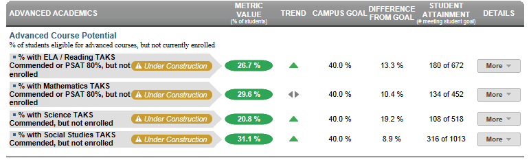

Dashboard Metrics


Advanced Course Potential
Background
District Dashboard Metrics
Because of the importance of rigorous coursework to postsecondary success and to support district efforts to increase advanced course completion, several districts, including Charlotte and Dallas, are beginning to incorporate into their internal performance management dashboards metrics to monitor advanced course enrollment among eligible students. In focus group discussions conducted with educators, the Advanced Course Potential metric was considered useful by 92% of respondents when reported at the campus level, but by only 85% of respondents when reported at the student level. The implication is that this metric, though still valuable to teachers in targeting their individual students for advanced coursework, may be even more useful to district leaders and counselors in developing strategic, district-wide approaches to increasing enrollment and success in advanced courses.
Primary Metric
- Advanced Course Potential: percent of students with demonstrated potential for advanced coursework (based on past state assessment at or above 2400 and PSAT, if taken, performance at greater than or equal to 80th percentile) who are not currently enrolled in advanced courses (AP, IB or DC courses) in the four core subject areas.
Related Metrics
- Advanced Course Availability: percent of students with advanced course potential (as defined above) divided by student slots offered in advanced classes by subject area.
- Advanced Course Enrollment: percent of students currently enrolled in at least one AP, IB or dual credit (DC) courses in the four core subject areas, with comparison to campus goal.
- Advanced Course Completion: percent of students who completed at least one AP, IB or dual credit (DC) course in the four core subject areas during prior years, with comparison to campus goal.
- Advanced Course Mastery: percent of students who scored at or above the specified criterion on required AP and IB exams in the four core subject areas.
User Interface
Dashboard Example
Figure 1 shows the Advanced Course Potential metric as seen on the district dashboard.

Figure 1 Ed-Fi Advanced Course Potential Metric
Status Definition
The Status column is the percentage of students that demonstrate advanced course potential that are not currently enrolled in an advanced course. Advanced courses include AP courses, IB courses, other advanced courses identified locally in the course characteristic, and dual enrollment (also known as dual credit courses).
"Demonstrated advanced course potential" is based on a student's scores for the PSAT or the state assessment test, as follows:
- Achievement of a PSAT score in the 80+ percentile; this is a state-defined score threshold for critical reading, writing, and mathematics subject areas.
- Achievement of a state assessment scale score that is equal to or greater than 2400; this is a state-defined score that classifies students as ‘Commended.’ It is assessed individually for the four state assessment subject areas administered in high school: ELA, mathematics, science and social studies.
The Status indicator is determined by district goals. The Ed-Fi default thresholds are
- PSAT at 80th Percentile, but not enrolled is 40%
- State Assessment Commended (≥ 2400), but not enrolled is 40%
Table 2 defines the Status indicators. The actual percentage is displayed with the indicator.
Metric Status Indicator | |||
Metric Name | Sub-metric Name | Metric Status Indicator | Campus Attainment |
Advanced Course Potential | % with ELA/Reading PSAT at the 80th percentile or Commended state assessment score, but not enrolled | Red (Percentage) = if percentage of students is greater than or equal to district goal Green (Percentage) = if percentage of students is less than district goal | The number of campuses meeting their campus goal over the number of campuses with data for the metric |
% with Mathematics PSAT at the 80th percentile or Commended state assessment score, but not enrolled | Red (Percentage) = if percentage of students is greater than or equal to district goal Green (Percentage) =if percentage of students is less than district goal | The number of campuses meeting their campus goal over the number of campuses with data for the metric | |
% with Science Commended state assessment score, but not enrolled | Red (Percentage) = if percentage of students is greater than or equal to district goal Green (Percentage) = if percentage of students is less than district goal | The number of campuses meeting their campus goal over the number of campuses with data for the metric | |
% with Social Studies Commended state assessment score, but not enrolled | Red (Percentage) = if percentage of students is greater than or equal to campus goal Green (Percentage) = if percentage of students is less than campus goal | The number of campuses meeting their campus goal over the number of campuses with data for the metric | |
Trend Definition
Table 3 lists the trend indicators for the Advanced Course Potential metric.
Trend Indicators: Objective is to indicate Daily Attendance Rate | |||
| Up green | If the value for the current time frame is more than 5 percentage points higher than the prior time frame, then display a gray arrow trending upward. | |
| Unchanged | If the value for the current time frame is less than or equal to 5 percentage points higher or less than or equal to 5 percentage points lower, then display two gray arrows pointing outward indicating no direction. | |
| Down red | If the value for the current time frame is more than 5 percentage points lower than the prior time frame, then display a gray arrow trending downward. | |
The trend does not show for the first occurrence of a time frame since data is not available.
Delta Definition
The delta appears only in the campus list and displays the individual campus goals rather than the district goal.
Delta Indicators: Objective is to indicate Advanced Course Potential | |||
Metric Name | Sub-metric Name | Campus Goal | Delta |
Advanced Course Potential | % with ELA/Reading PSAT at the 80th percentile or Commended state assessment score, but not enrolled | Set campus goal | Red (Delta Percentage) = if the calculated percentage of students is greater than or equal to the campus goal Black (Delta Percentage) = if the calculated percentage of students is less than the campus goal |
% with Mathematics PSAT at the 80th percentile or Commended state assessment score, but not enrolled | Set campus goal | Red (Delta Percentage) = if the calculated percentage of students is greater than or equal to the campus goal Black (Delta Percentage) = if the calculated percentage of students is less than the campus goal | |
% with Science Commended state assessment score, but not enrolled | Set campus goal | Red (Delta Percentage) = if the calculated percentage of students is greater than or equal to the campus goal Black (Delta Percentage) = if the calculated percentage of students is less than the campus goal | |
% with Social Studies Commended state assessment score, but not enrolled | Set campus goal | Red (Delta Percentage) = if the calculated percentage of students is greater than or equal to the district goal Black (Delta Percentage) = if the calculated percentage of students is less than the campus goal | |
Periodicity
Best practice is to load data for this metric as soon as new PSAT and/or state assessment files are available.
Recommended Load Characteristics | |
Calendar | Semester |
Frequency of data load | Twice a year |
Latency | 1 year |
Interchange schema | Interchange-StudentAssessment.xsd |
Tooltips
The standard tooltips for the metric definition, column headers, and help functions display for this metric.
Additionally, there is a tooltip that reads, "See PSAT and state assessment Commended for date of refresh."
 is ‘No change from the prior period'
is ‘No change from the prior period' is ‘Getting worse from the prior period’
is ‘Getting worse from the prior period’ is 'Getting better from the prior period'
is 'Getting better from the prior period'
Business Rules
The Advance Course Potential – Current Year metric is the percentage of students who in their prior year’s test show potential for advanced courses in specific subjects (as measured by high scores on the PSAT and/or the state assessment) but are not currently enrolled in advanced courses in the following subjects in grade levels 6 – 12.
- ELA
- Mathematics
- Science
- Social Studies
“Advanced Courses” are those defined as
- PreAP courses
- PreIB courses
- AP courses
- IB courses
- Other advanced courses identified by the course characteristic
- Dual enrollment (also known as Dual Credit courses)
A student is rated as having “advanced course potential” if their
- PSAT score is at or above the 80th percentile for the reading, writing, and mathematics subjects.
- State assessment score is at the “Commended” level for ELA, mathematics, science or social studies. Ed-Fi uses a flag in the student's state assessment data that indicates a ‘Commended’ score.
Data Assumptions
- The state-defined threshold of “Commended” is indicated in the state assessment results file.
- If the PSAT or state assessment are taken multiple times, only the results from the last time taken are used.
- Student PSAT scores by subject are available for critical reading, writing, and mathematics.
- Student state assessment scores by subject are available for the grade level.
- The type of the state assessment test is available per student (e.g., state assessment-M, state assessment-S, etc.).
Computed Values
The cohort is the set of currently enrolled students that fall into the 80th percentile for the PSAT test and/or have a Commended score for a state assessment test.
Table 6 defines how values for each sub-metric are calculated. These percentages display in the Status column.
Metric Values | |
% with ELA/Reading PSAT at 80% percentile or Commended state assessment score, but not enrolled | (Total of all current students whose ((PSAT Critical Reading ≥ 80th percentile or PSAT Writing ≥ 80th Percentile) or (state assessment is Commended)) and (are not currently enrolled in an advanced course in ELA) * 100 / (Total of all students whose (PSAT Critical Reading ≥ 80th percentile Or PSAT Writing ≥ 80th Percentile) or state assessment is Commended) |
% with Math PSAT at 80% percentile or Commended state assessment score, but not enrolled | (Total of all current students whose (PSAT Math ≥ 80th percentile) or (state assessment math is Commended)) and (are not currently enrolled in an advanced course in math) * 100 / (Total of all students whose PSAT Math ≥ 80th percentile or state assessment is Commended) |
% with Science Commended state assessment score, but not enrolled | (Total of all current students whose prior year state assessment Science score is Commended and are not currently enrolled in an advanced course in science) * 100 / (Total of all current students whose prior year state assessment is Commended) |
% with Social Studies Commended state assessment score, but not enrolled | (Total of all current students whose prior year state assessment Social Studies is Commended and are not currently enrolled in an advanced course in social studies) * 100 / (Total of all current students whose prior year state assessment is Commended) |
Data Anomalies
Date of Refresh
Best practice is for tooltip that reads, "See PSAT and state assessment Commended for date of refresh."
Differing Number of Campuses
Since many specialized campuses have small populations, there may be a case where a campus has data for one subject area but not another. If this is the case, the district metrics will have differing numbers of campuses for each subject area.
Implementation Considerations
Student Identity
Maintaining a correct and consistent student identity is at the center of any education data system. Most systems use some sort of unique identifier. However, sometimes this identifier is entered incorrectly or sometimes different systems use different identifiers.
The UDM XML supports the interchange of multiple types of identifiers. The Student Reference is a complex type within the UDM to maintain the referential integrity of the student (that is, ensuring that the data associated with each student is accurately associated with the right student). The complex type of the student reference assists with implementing the accurate matching algorithm to identify a student by utilizing any of the individual attributes (e.g., Student Unique State ID, Student ID, Campus Local ID (with Campus ID), Name and Birth Date). For example, if the Student Unique State ID is unknown, you can find the student’s identity by their Student ID, First Name, Last Name and Birth Date.
Advanced Course Definition
Best practice is for developers to ensure that the definition of the exact courses that qualify as “advanced” include AP and IB courses as well as those defined as advanced by both the state and locally defined by the district. This mapping looks at the course characteristic type as coded locally. In the case of courses that are both AP and another type such as GT, the course should have the characteristic type of AP. If the other characteristic is recorded, the course will not appear as 'advanced.'
Campus Goals
Best practice is to set the goals for each campus at the district level. A secure mechanism is required to allow the district to set and maintain those goals.
Transfer Students (Late Enrollments)
Transfer students may not have complete transcripts from which to identify prior exam scores. For the Ed-Fi dashboard tools, late enrollees are not included in the metric definition.
Reporting Retakes of the Same PSAT or State Assessment Test
Currently the metric reports only the most recent result for a given PSAT test by subject or for a given state assessment test by type, grade level, and subject. Alternatively, developers can display the best results across all attempts.
Changes in State Assessments
If states that are undergoing changes in assessment standards and/or tests, it may impact the way that current and longitudinal data is presented.
State Assessment Standards
With state assessment, the assessment indicators are based upon the percentage of students who perform satisfactorily on the assessment. In 2014, with the first full release of state assessment, they will be based on the percentage of students that meet the college ready standard.
State assessment EOC assessments for Algebra II and English III will have college readiness objectives. Evaluating the performance of science and social studies EOC assessments as related to college readiness is still pending. A student must pass these objectives in order to be identified in the data file as college ready.
Each of these objectives requires that the state determine thresholds for student and campus performance.
Ed-Fi assumes that the test providers include all the data related to state assessment, EOC and college readiness.
Aggregate Metric Inclusions and Exclusions of Special Education Students
Each campus's aggregate metrics may include or exclude the special education population, depending on the intended purpose for a specific metric and campus goal. This may affect the district metric.
Drill Downs
Drill Down Views
The dashboards include the option to see more detail that is associated with a metric. Table 7 lists drill down views that are recommended for this metric.
| Historical | Graph of metric values across multiple time periods (current and prior years). | |
| Campus List | List of campuses and whether or not they meet the threshold for this metric for the specified period. |